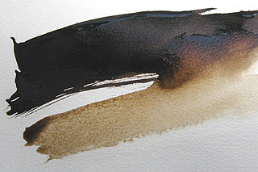

| |
|
Courrier des Lecteurs
2011 - saison 3/3
|
|
 |
5/8/2011 - C.C-D
Brou de noix comme fond
cdl cdl cdl
Navigation, sommaire
thématique
cliquer ici
Dialogue antérieur -
Dialogue suivant
|
|
CCD :
Je viens de consulter votre site à la
recherche de conseils avec la peinture brou de noix
et je n'ai pas trouvé de réponses. Peut-être pourriez-vous y
remédier ?
Ma question :
Est-il possible après avoir appliqué du brou de noix en peinture de
fond sur du bois, peindre à l'huile "artiste" par-dessus ?
En fait, j'ai réalisé au graveur sur du bois un motif et je
souhaiterai y mettre un fond en brou de noix et peindre ensuite à
l'huile mes motifs. Est-ce possible ?
|
|
 |
|
|
|
Dtp :
Attention, il faut absolument être sûre qu'il s'agit bien de brou de
noix car très souvent, on vend sous cette appellation d'autres
produits, auquel cas il faut renoncer car on ne sait pas ce que c'est.
Concernant le vrai brou, il est
nécessaire soit de le mordancer (alun), soit de
le lier. Le produit dont vous disposez a peut-être été préparé, il
vaudrait mieux savoir comment le cas échant.
Mais parlons d'abord des propriétés
chromatiques pour approfondir et élargir un peu le sujet.
|
|
Est-ce bien du brou de
noix ? |
|
|
|
Contenant de l'inositol (un
isomère cyclique
qui n'est autre qu'un tanin que l'on trouve dans le vin et dans notre
propre corps qui en secrète quelques grammes par jour, dit-on) et
différentes variantes de juglon (ou juglone, une sorte de double cycle
benzénique complètement hydroxydé), ses principes colorants sont assez
strictement organiques (C, O et H).
Il a relativement bonne presse mais il
ne faut pas imaginer qu'un tel colorant soit éternel. Ce n'est pas de
la pourpre !
François Perego indique dans son
Dictionnaire que l'opinion des
teinturiers changea grandement au fil du temps : « (...) un
règlement des drapiers de Reims de 1340 en interdisait l'usage pour la
teinture, mais J.B. Colbert le fit placer parmi les teintures
grand
teint (ordonnance de 1671). » (p. 141). Comprenne qui pourra. Sans
doute les procédés de préparation ont-ils varié. Cela doit nous
inciter à veiller sur ce point.
|
|
Tanins organiques |
|
|
|
La préparation peut en effet s'effectuer
de plusieurs manières. Nous en citerons deux, il doit en exister cent
ou mille, depuis le moment où l'on a constaté que le brou a tendance à
tacher un peu les doigts.
1. la plus
simple, mais ni confirmée ni approuvée : laisser au sol la noix tombée
de l'arbre en octobre et la récupérer en mai. L'écale est censée avoir
séché et tomber en poudre. En réalité, le plus important n'est sans
doute pas la pulvérisation mais plutôt
l'oxydation qui a lieu pendant le séchage et qui permet de
faire passer cette substance du vert au rouge ou au brun voire au
noir. Il est possible également qu'une fermentation ait lieu pendant
cette période de sept mois.
En mai, donc, on fait bouillir les
écales dans l'eau durant quelques heures (une infusion ou une
décoction laisseraient les molécules plus intactes). Puis trouver un
liant (aqueux ou émulsionné) ou un mordant selon l'usage. Une autre
possibilité est de couvrir la surface "peinte" avec un liant (cire,
huile) ou un vernis.
2. (source
F. Perego, qui ne précise pas à quel stade on récolte, peut-être à
juste raison car on ne désire pas nécessairement obtenir un seul et
unique résultat).
On couvre à peine l'écale (les feuilles
aussi peut-être, il ne précise pas) d'eau et on laisse fermenter « plusieurs
années ou beaucoup moins longtemps à une douce chaleur ». Cela
représente une forte différence ! Certainement existe-t-il une raison
à cela.
Quoi qu'il en soit, pourquoi une
fermentation ? L'écale contient un glucoside,
le 1,4,5-trihydroxynaphtalène (dit aussi α-juglone
ou quelques produits avoisinants).
Donc un sucre associé à autre chose, qu'une sympathique et laborieuse
bactérie, une levure, va se charger de dissocier en produisant à
partir du sucre un alcool et du CO2, car la fermentation,
c'est ça (lien).
Cette fermentation permet peut-être
de rendre la juglone et ses cousines un peu plus concentrées ou plus
stables... difficile à dire mais effectivement, en faisant fermenter
le jus de raisin, on recycle les sucres et in fine, on isole/concentre
les tanins. Cela donne le vin. La transformation est absolument
majeure.
|
|
La préparation est un
processus biochimique relativement lourd |
|
|
|
A propos d'alcools, notons au passage
que André Béguin signale dans son
Dictionnaire (T.1, p. 221) que l'on fabrique également une
liqueur de brou de noix. Une simple
recherche Google confirme cette information. Le noyer est
décidément un végétal formidable. On en fait des huiles, des
teintures, des peintures, on en fait de beaux meubles, on le mange, on
le boit...
F. Perego n'indique malheureusement pas
de quelle levure il s'agit dans le procédé qu'il expose ni s'il faut une sorte de "mère" (voir
mère de vinaigre) ou de
"levure de boulangerie". Il termine en précisant que l'on
peut faire réduire la décoction à feu doux, mais que de toute façon on
obtient un résultat beaucoup plus sûr avec des oxydes de fer ou
certains azoïques. Nous ne confirmons pas
du tout cette information concernant les azoïques.
La réduction "comme en cuisine" peut
éventuellement aider à chasser l'éthanol s'il en reste. On peut aussi
bien laisser le liquide s'éventer à froid, étant donné la
pression de vapeur de l'alcool (2,5 fois
celle de l'eau). Quant à l'eau, on suppose que l'on n'en a pas tant
mis au départ ! Et au pire il suffit de la laisser s'évaporer.
Pour en savoir plus il faudrait sûrement
lire Dominique Cardon, ou
bien effectuer une batterie de tests de longue durée.
|
|
Noyers dans l'alcool |
|
|
|
Donc de toute façon on obtient d'une
manière ou d'une autre une sorte de concentré de tanins qu'il vaudrait
mieux ne pas chauffer outre mesure lors de la préparation si l'on veut
garder quelques assemblages moléculaires intacts. En effet, nous
sommes en présence d'une chimie très fine, très compliquée.
|
|
On ne sait pas tout du
brou de noix |
|
|
|
L'inositol semblerait jouer un rôle très
important dans la formation de polymères (de gros polymères
biologiques) selon des études récentes (des années 10) dont il n'est
pas difficile de trouver la trace sur le réseau.
Quant au juglon (ou juglone), il est sur
la sellette, tantôt considéré comme une prometteuse substance
anti-cancéreuse, tantôt comme poison (plutôt dans la littérature
américaine, comme toujours). Un sujet pointu en biochimie.
Donc dire "le brou de noix, on ne sait
pas encore très bien comment ça marche" est un euphémisme.
Même sans aller aussi loin, en guise de
conclusion, avant d'appliquer une peinture au-dessus de votre brou de
noix il faudrait vraiment établir de quoi il est composé. Et surtout à
quel produit il est associé : mordant ou liant, lequel, ou bien ni
l'un ni l'autre. Vous pouvez réaliser quelques essais sur des
échantillons, ou bien trancher la question en substituant au brou une
peinture plus standard, compatible avec celle que vous souhaitez
appliquer au-dessus. En fait c'est certainement la meilleure solution,
même si elle n'est pas aussi poétique. Mais il faut être clair : avec
un brou indéterminé il vous faudra beaucoup de temps et d'efforts pour
savoir à quoi vous en tenir.
|
|
Un sujet dans le vent et
même plutôt "hi-tech" en biochimie.
|
|
|
|
Habituellement de nos jours, le brou de
noix n'est utilisé que pour les études ou la décoration et
malheureusement on a tendance à le confondre avec une encre ou une
teinture alors qu'il n'est (produits commerciaux mis à part) qu'un concentré de tanins. Comme du thé
ou du vin.
|
|
Ce n'est ni une encre
ni une teinture |
|
Retour
début de page
|
|

 Communication
Communication
|
|